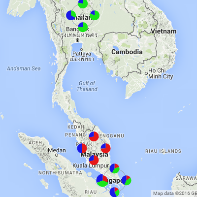

- IoT - A hybrid mobile application built on top of Ionic 2, AngularJS 2, Typescript, D3 and Google Maps demostrates smart street lighting management and data center management.

- BI - A online business intelligence tool built on top of D3, AlaSQL and Dragula.
